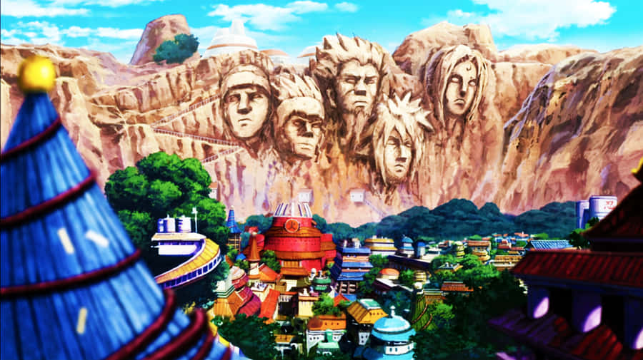
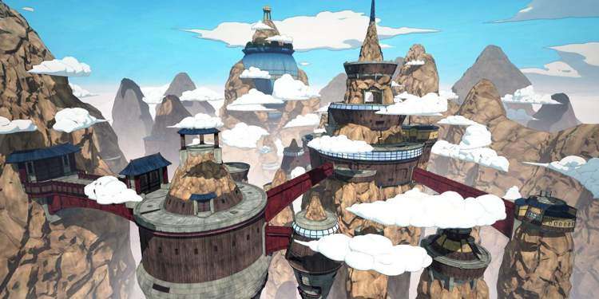
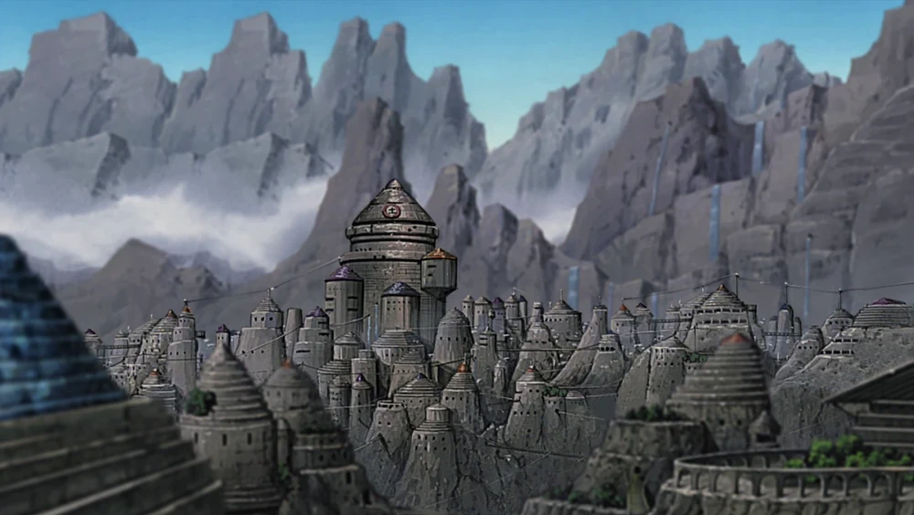
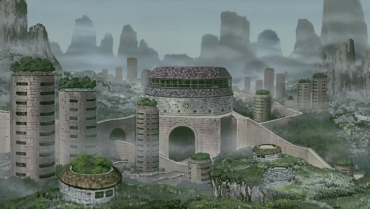
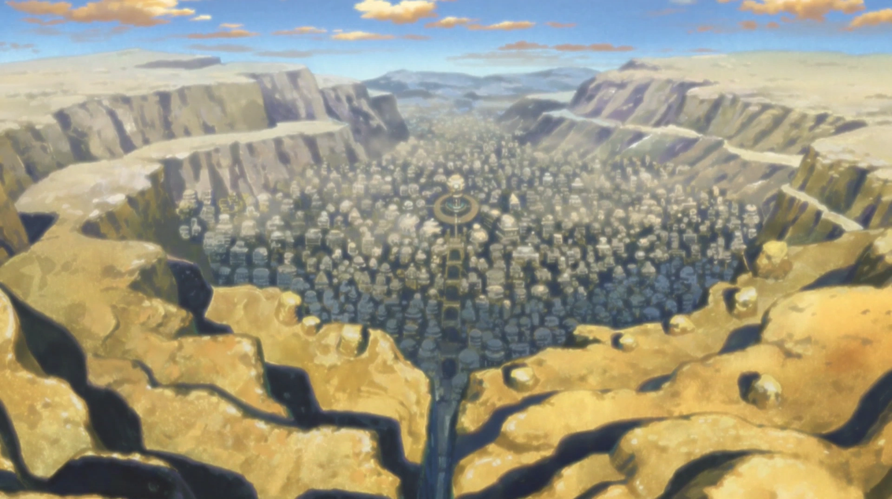

En el universo de Naruto, las Aldeas Ocultas son territorios que funcionan como la fuerza militar de sus respectivos países y son clave para su economía, gracias a los ingresos generados por las misiones. Sus habitantes, principalmente shinobis, desarrollan habilidades únicas desde la infancia, siguiendo un código de vestimenta y usando bandas distintivas. Este entrenamiento temprano asegura que las aldeas formen ejércitos prestigiosos y altamente valorados.
En este mundo, las cinco grandes naciones albergan las principales aldeas shinobi, consideradas las más poderosas y fundamentales en la política y comercio entre las naciones ninja. Los líderes de estas aldeas, llamados Kage, son reconocidos por comandar a miles de ninjas bajo su autoridad. Estas aldeas son las principales potencias del mundo shinobi.
Aldea Oculta entre las Hojas

La aldea, liderada por el Hokage, es conocida por ser la primera aldea oculta del mundo shinobi y el origen de la paz tras la Era de Guerra entre Clanes. Fue fundada por los poderosos clanes Senju y Uchiha, con Hashirama Senju como su primer Kage. Se destacó por repartir las Bestias con Cola para promover la paz, crear los ANBU como unidad militar especializada y honrar a sus Hokages con esculturas en una colina. Su filosofía se basa en la Voluntad de Fuego. Es la aldea de origen de Naruto Uzumaki, los Sannin legendarios y varios miembros de Akatsuki, como Itachi y Sasuke Uchiha.
Aldea Oculta entre las Nubes

La aldea, liderada por el Raikage, es considerada la segunda más poderosa después de Konohagakure. Sus ninjas destacan en el uso de técnicas de Elemento Rayo y Kenjutsu. Cuenta con dos Bestias con Cola, Matatabi y Gyūki, y su único clan conocido es el Yotsuki. Su símbolo representa nubes, formado por óvalos alargados conectados y uno adicional a la izquierda.
Aldea Oculta entre las Rocas

La aldea, liderada por el Tsuchikage, ha tenido cuatro líderes hasta ahora y se caracteriza por frecuentes conflictos con Konohagakure y Kirigakure. Es el lugar de origen de Deidara, miembro de Akatsuki, y la única que contrató a esta organización como mercenarios. Posee a las Bestias con Cola Son Gokū y Kokuō, y destaca por ser la única con shinobis que dominan el Kekkei Tota. Ubicada en una región montañosa, sus ninjas sobresalen en técnicas de Elemento Tierra.
Aldea Oculta entre las Nieblas

Kirigakure, ubicada en el País del Agua, es conocida como la Aldea de la Niebla Sangrienta y está liderada por el Mizukage, título que ha sido ostentado por seis líderes hasta ahora, siendo Chōjūrō el actual. Sus ninjas se especializan en técnicas de Elemento Agua y Jutsu de Ocultación en la Niebla. Es la cuna de los legendarios Siete Espadachines de la Niebla y de Kisame Hoshigaki, miembro de Akatsuki. Además, la aldea es hogar de dos Bestias con Cola, Saiken e Isobu.
Aldea Oculta entre las Arena

La aldea, liderada por el Kazekage, ha tenido cinco líderes, siendo Gaara, Kankurō y Temari sus habitantes destacados. Es el lugar de origen de Sasori, miembro de Akatsuki, y del Shukaku, su única Bestia con Cola, vinculada a un espíritu encerrado en una tetera. Con Gaara como Quinto Kazekage, estableció una alianza con Konohagakure. Su símbolo es un reloj de arena, y sus ninjas sobresalen en marionetismo, uso de armas envenenadas y técnicas basadas en los Elementos Viento e Imán.